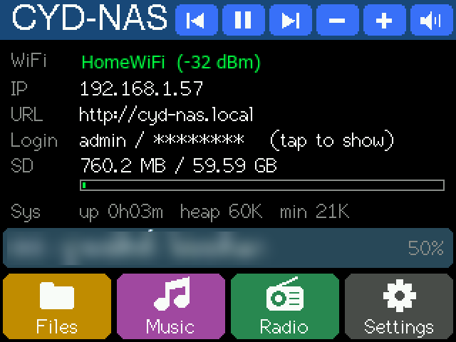
CYD-NAS Pro · microSD NAS + music + radio
ติดตั้ง CYD-NAS Pro ผ่านเบราว์เซอร์
เปลี่ยนจอ CYD (ESP32-2432S028R จอเหลือง 2.8") เป็นที่เก็บไฟล์ในบ้าน เปิดผ่านเว็บจากคอมหรือมือถือ พร้อมเครื่องเล่นเพลง วิทยุออนไลน์ และดูรูปบนจอ ติดตั้งได้จากคอมพิวเตอร์ (Chrome หรือ Edge) และมือถือ Android (Chrome กับสาย OTG)
รุ่น Pro ต้องปลดล็อกก่อนใช้งาน
ติดตั้งได้เลย แต่เครื่องจะขึ้นหน้าล็อกพร้อมรหัสเครื่อง (เช่น
ติดตั้งได้เลย แต่เครื่องจะขึ้นหน้าล็อกพร้อมรหัสเครื่อง (เช่น
NAS-1234567) ส่งรหัสนี้ทาง LINE ผู้พัฒนา เพื่อขอรหัสปลดล็อก รหัสผูกกับบอร์ดของคุณและใช้ได้ตลอดไป · อยากลองแบบฟรีก่อน: CYD-NAS Liteเบราว์เซอร์นี้ใช้ไม่ได้
เปิดหน้านี้ด้วย Google Chrome หรือ Microsoft Edge บนคอม หรือ Chrome บนมือถือ Android · iPhone และ iPad ใช้ไม่ได้ (Apple ไม่เปิดให้เว็บใช้พอร์ต USB)
เปิดหน้านี้ด้วย Google Chrome หรือ Microsoft Edge บนคอม หรือ Chrome บนมือถือ Android · iPhone และ iPad ใช้ไม่ได้ (Apple ไม่เปิดให้เว็บใช้พอร์ต USB)
1. เสียบบอร์ด
- คอม: เสียบด้วยสาย USB ที่ส่งข้อมูลได้ และปิดโปรแกรมอื่นที่อาจใช้พอร์ต เช่น Arduino IDE, Serial Monitor
- มือถือ: ใช้สาย USB-C ↔ USB-C หรือหัวแปลง OTG จอบอร์ดควรติด (OPPO, realme, vivo บางรุ่นต้องเปิด “การเชื่อมต่อ OTG” ในตั้งค่าก่อน)
- ใส่การ์ด microSD ไว้ได้เลย (การ์ดใหม่ที่ไม่ใช่ FAT32 เครื่องจะชวนฟอร์แมตให้เอง)
2. เลือกแบบติดตั้ง
ไม่ต้องเลือกรุ่นจอ: เครื่องตรวจจอ (ILI9341 / ST7789) แล้วตั้งสีให้เองตอนเปิดครั้งแรก
3. ติดตั้ง
กดปุ่มแล้วเลือกบอร์ด (ชื่อมักเป็น “USB Serial”, “CH340” หรือ COM) แล้วกดเชื่อมต่อ
ใช้เวลาประมาณ 1–3 นาที อย่าถอดสายหรือปิดจอมือถือระหว่างนี้ · ค้างที่ “กำลังเชื่อมต่อ” นาน: กดปุ่ม BOOT ที่บอร์ดค้างไว้แล้วลองใหม่
ตั้งค่าขั้นสูง / บันทึกการทำงาน
วิธีเชื่อมต่อ
ความเร็ว
หลังติดตั้ง
- โลโก้ร้านขึ้น แล้วแตะ + ทั้ง 4 มุมเพื่อปรับทัช (ทำครั้งเดียว)
- เลือก WiFi บนจอแล้วพิมพ์รหัส หรือกด Use phone setup แล้วสแกน QR ตั้งค่าจากมือถือ
- เครื่องขึ้นหน้าล็อกพร้อมรหัสเครื่อง ส่งรหัสนั้นทาง LINE แล้วนำรหัสปลดล็อกที่ได้ไปวางในหน้าเว็บของเครื่อง (สแกน QR บนจอ) เครื่องรีสตาร์ทแล้วใช้งานได้เลย
- เปิด http://cyd-nas.local หรือ IP บนจอ จากคอม/มือถือในวง WiFi เดียวกัน · ชื่อผู้ใช้/รหัสอยู่ที่แถว Login บนจอ (แตะเพื่อแสดง)
ทำอะไรได้บ้าง
- NAS ผ่านเว็บ: อัปโหลด (ลากไฟล์หรือทั้งโฟลเดอร์), ดาวน์โหลด, ลบ, เปลี่ยนชื่อ, สร้างโฟลเดอร์ · ดูรูป วิดีโอ MP4 และไฟล์ข้อความในหน้าเว็บ ปัดเปลี่ยนไฟล์ได้
- เครื่องเล่นเพลงบนจอ: MP3/WAV เล่นทั้งโฟลเดอร์ สุ่ม วนซ้ำ ลากแถบเวลา EQ 5 ช่อง ตั้งเวลาปิด เล่นต่อจากที่หยุด ซ่อนหน้าแล้วคุมจากแถบบนหน้าหลัก
- วิทยุออนไลน์: สถานีจาก radio-browser หลายหมวด (ไทย ทั่วโลก ญี่ปุ่น เกาหลี Jazz Lo-fi ข่าว …) ติดดาวสถานีโปรดและปักหมวดไว้ด้านบน
- ดูรูปและอ่านไฟล์บนจอ: JPG/PNG/BMP/GIF สไลด์โชว์เต็มจอ · ข้อความภาษาไทย
- นาฬิกาพักจอ หรี่แสงตอนไม่ได้ใช้ · ระหว่างรับส่งไฟล์ผ่านเว็บ เพลงหยุดรอให้เองพร้อมแสดงความคืบหน้า
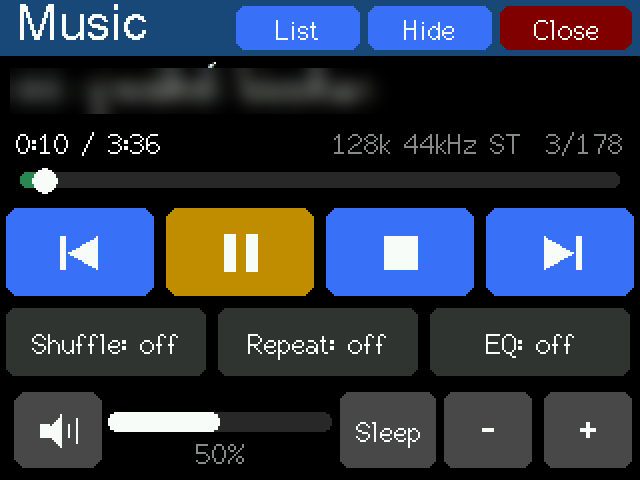
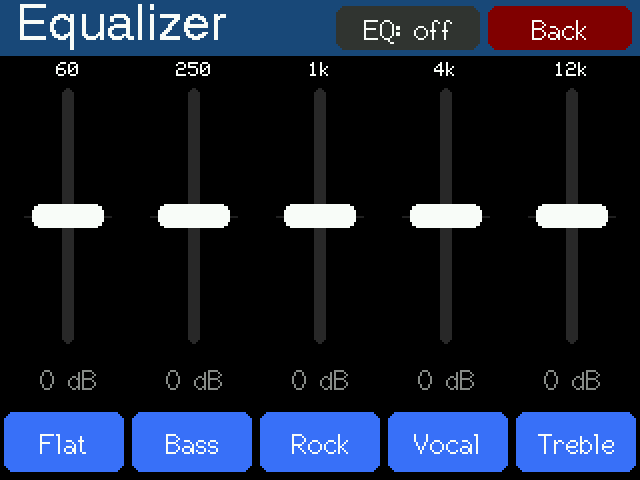
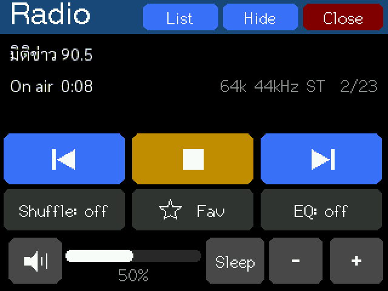
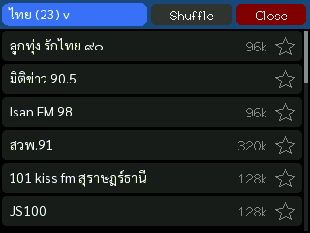
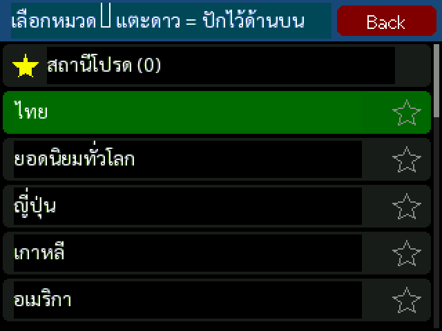
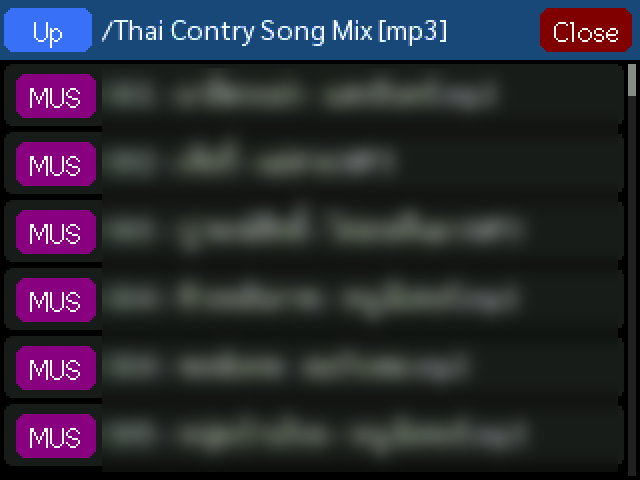
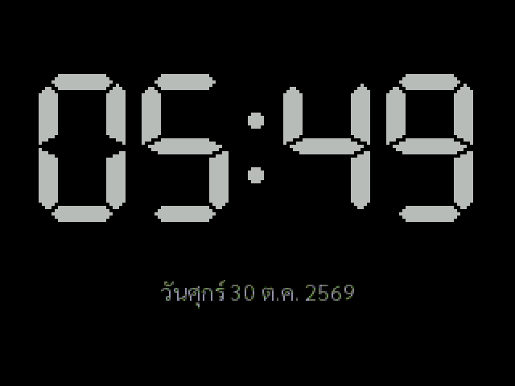
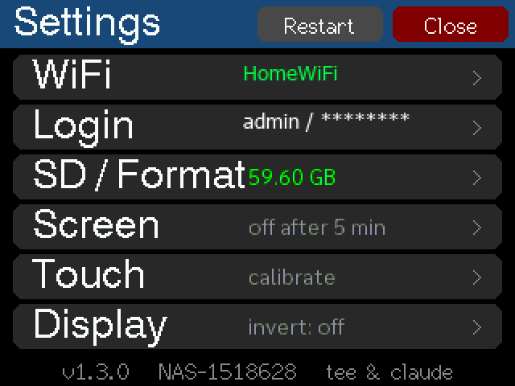
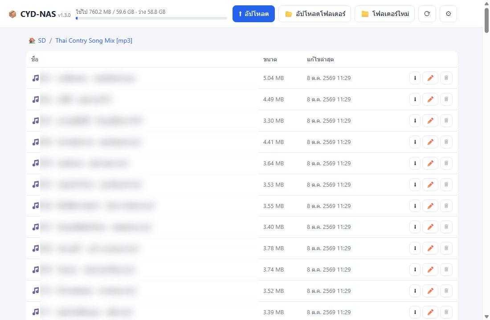
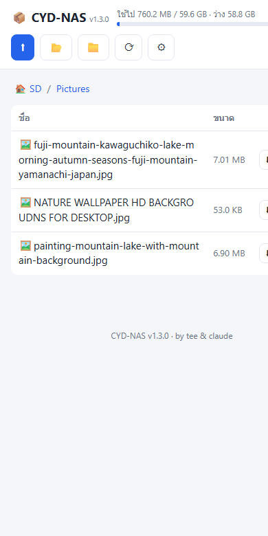